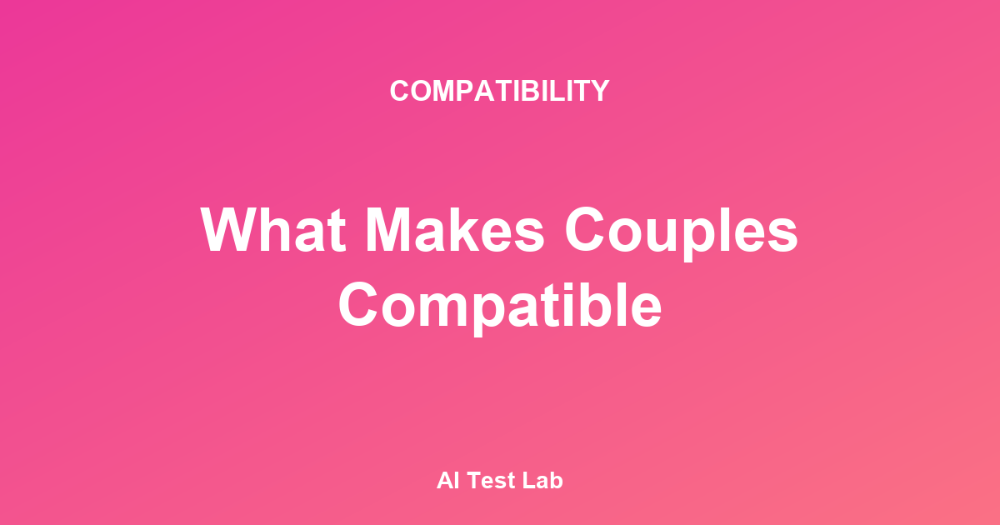

Algunas parejas se siguen valorando profundamente décadas después de conocerse, mientras que otras relaciones se desvanecen en pocos años. Esta diferencia no es cuestión de suerte. Los psicólogos que llevan décadas estudiando a las parejas han identificado los rasgos y patrones que caracterizan a las relaciones sanas y duraderas.
El Instituto Gottman (The Gottman Institute)
El Dr. John Gottman lleva más de 40 años investigando las relaciones de pareja y ha desarrollado métodos para predecir el divorcio a partir de patrones de conversación. Su trabajo es reconocido como uno de los marcos más fiables para evaluar la salud de una relación. Fuente: Gottman, J. M., & Silver, N. (1999). The Seven Principles for Making Marriage Work. New York: Crown Publishers.
Los 7 rasgos comunes de las parejas compatibles
Mantener una proporción positiva de emociones
Gottman descubrió la «proporción mágica»: las parejas sanas mantienen una ratio de 5 interacciones positivas por cada 1 negativa, incluso durante los conflictos. Esto no significa que no haya desacuerdos. Significa que entre los conflictos debe existir suficiente calidez, humor y afecto.
Construir un mapa emocional (Love Map)
El primer principio de la teoría de Gottman es el «Love Map»: conocer profundamente el mundo interior de la pareja: sus sueños, miedos, preferencias, recuerdos de infancia y preocupaciones actuales. Las parejas compatibles hacen un esfuerzo continuo por aprender sobre el otro y actualizar ese conocimiento.
Gestionar los conflictos en lugar de evitarlos
Las parejas sanas no resuelven los conflictos en su totalidad, sino que los gestionan. Según la investigación de Gottman, aproximadamente el 69 % de los conflictos en pareja son «problemas perpetuos» que no tienen solución definitiva. Las parejas con éxito no buscan eliminarlos, sino aprender a convivir con ellos entendiéndose mutuamente.
Estilo de apego seguro
La investigación de Hazan & Shaver (1987) mostró que las personas con apego seguro (Secure Attachment) aceptan la intimidad con comodidad, mantienen su independencia y responden constructivamente ante los conflictos. En las parejas compatibles, al menos uno de los dos miembros tiende a tener apego seguro. Fuente: Hazan, C., & Shaver, P. (1987). Romantic love conceptualized as an attachment process. Journal of Personality and Social Psychology, 52(3), 511-524.
Apoyar los sueños de la pareja
En la investigación de Gottman, la causa más profunda de los conflictos suele ser la sensación de que los sueños y aspiraciones personales son ignorados. Las parejas sanas reconocen y respetan los sueños del otro, aunque no siempre puedan hacerlos realidad. El mensaje central es: «Sé que eso es importante para ti».
Compartir el humor y la ligereza
La capacidad de reír juntos es un recurso poderoso en la relación. El estudio de Fraley & Aron (2004) demostró que el humor compartido aumenta la intimidad y la satisfacción en la pareja. Lo más eficaz es el «humor interno» — ese lenguaje y chistes que solo comparten los dos. Fuente: Fraley, B., & Aron, A. (2004). The effect of a shared humorous experience on closeness in initial encounters. Personal Relationships, 11(1), 61-78.
Comenzar las conversaciones con suavidad, no con crítica
Gottman descubrió que uno de los indicadores más poderosos del resultado de un conflicto es el modo en que comienza la conversación. Las conversaciones que empiezan con crítica o ataque casi siempre terminan mal. Por el contrario, empezar con algo como «Esto me resulta difícil» tiene muchas más probabilidades de conducir a una solución constructiva.
¿Se pueden aprender estos rasgos?
La buena noticia es que todas estas características pueden aprenderse. Independientemente de la personalidad innata o de los patrones relacionales del pasado, las habilidades relacionales pueden mejorar con esfuerzo consciente y práctica.
Pequeños hábitos que puedes empezar hoy
- Dedica 5 minutos al día a preguntar con genuina curiosidad cómo fue el día de tu pareja.
- Cuando expreses una queja, empieza por «Yo siento...» en lugar de «Tú siempre...».
- Celebra de corazón los logros de tu pareja, por pequeños que sean.
- Busca una vez por semana un momento para reír juntos.
- Si un conflicto no se resuelve, di: «Todavía no entiendo del todo esta parte, pero seguiré intentándolo».
El test de compatibilidad con IA y la compatibilidad real
El test de compatibilidad con IA analiza la similitud y complementariedad de la personalidad, los valores y el estilo de comunicación de dos personas. Esto puede servir como indicador que refleja algunos de los 7 rasgos presentados arriba.
Lo importante no es interpretar el resultado del test como un veredicto de «somos compatibles / no somos compatibles», sino utilizarlo como una herramienta para explorar «¿en qué áreas deberíamos crecer juntos?». Esforzarse por hacer que la relación actual sea más sana es mucho más valioso que buscar la compatibilidad perfecta.
Los 4 patrones que debilitan la relación: los «Cuatro Jinetes» de Gottman
Tan importante como conocer los rasgos de las parejas compatibles es aprender a identificar los patrones negativos que erosionan gradualmente una relación. Gottman (1994) denominó «Cuatro Jinetes del Apocalipsis» (Four Horsemen of the Apocalypse) a los cuatro patrones de conducta que predicen con fuerza el divorcio. Si estos patrones aparecen con frecuencia en los conflictos cotidianos, es momento de revisar la salud de la relación.
- Crítica (Criticism): No expresar insatisfacción por un comportamiento concreto, sino atacar directamente la personalidad o el carácter de la pareja. «Se te olvidó» es una queja; «Siempre eres un descuidado» es una crítica. Quejarse es normal, pero la crítica socava la identidad del otro.
- Desprecio (Contempt): Expresar superioridad sobre la pareja mediante burlas, sarcasmo o humor hostil. Gottman señala el desprecio como el predictor individual más poderoso del divorcio. Es la ira acumulada durante mucho tiempo que se manifiesta como sentimiento de superioridad.
- Actitud defensiva (Defensiveness): Responder con excusas y contraataques en lugar de asumir responsabilidad. Reacciones como «No es culpa mía, fue porque tú primero...» no conducen a la resolución del conflicto, sino que lo agravan.
- Bloqueo o muro de piedra (Stonewalling): Evitar la conversación y desconectarse emocionalmente. En las mediciones fisiológicas del laboratorio de Gottman, este bloqueo se interpreta como una respuesta de abrumamiento físico (flooding) ante un estímulo negativo crónico. Sin embargo, la pareja lo percibe como rechazo o indiferencia.
El hecho de que estos 4 patrones aparezcan con frecuencia no significa necesariamente el fin de la relación. Gottman subraya que para cada uno de ellos existe un «antídoto» que puede aprenderse: frente a la crítica, un inicio suave; frente al desprecio, expresiones de gratitud y respeto; frente a la actitud defensiva, asumir una parte de la responsabilidad; frente al bloqueo, calmarse uno mismo antes de retomar el diálogo. Fuente: Gottman, J. M. (1994). Why Marriages Succeed or Fail. New York: Simon & Schuster.
Estilo de apego y compatibilidad en pareja
Antes mencionamos brevemente el apego seguro (Secure Attachment). La teoría del apego adulto distingue 4 estilos: seguro (Secure), ansioso (Anxious), evitativo (Avoidant) y desorganizado (Disorganized). La combinación de estilos de apego de los dos miembros de la pareja ofrece otro lente para entender la dinámica relacional.
Según el análisis exhaustivo de Mikulincer & Shaver (2007), las parejas en las que ambos miembros tienen apego seguro presentan los niveles más altos de satisfacción y estabilidad relacional. Cuando uno de los dos tiene apego seguro, se observa un efecto amortiguador («buffering») que mitiga parcialmente los patrones de ansiedad o evitación del otro. Por otro lado, las combinaciones en las que ambos son evitativos o ambos son ansiosos tienden a encontrar mayores dificultades en la gestión de los conflictos.
Lo fundamental es que el estilo de apego no es un destino inamovible. El concepto de «apego seguro adquirido» (Earned Secure Attachment) demuestra que, incluso quienes experimentaron un apego inseguro en la infancia, pueden evolucionar hacia patrones más estables a través de experiencias relacionales seguras o trabajo terapéutico. Es decir, que el estilo de apego actual de uno mismo o de la pareja sea inseguro no imposibilita tener una buena relación. Fuente: Mikulincer, M., & Shaver, P. R. (2007). Attachment in Adulthood: Structure, Dynamics, and Change. New York: Guilford Press.
Limitaciones de la investigación — la generalización del modelo de Gottman
La investigación de Gottman, citada con frecuencia en este artículo, es muy influyente, pero conviene señalar también sus limitaciones con claridad.
- Sesgo de la muestra: Las muestras de los estudios iniciales de Gottman estaban compuestas principalmente por parejas heterosexuales, blancas y de clase media del estado de Washington (EE. UU.). La investigación posterior que replique estos patrones con la misma intensidad en contextos latinoamericanos, asiáticos u otros es limitada.
- Carácter estadístico de las predicciones: El dato de «94 % de precisión» que se cita con frecuencia ha sido objeto de críticas: dependiendo de los criterios de medición utilizados, el ajuste del modelo puede interpretarse de manera diferente (Heyman & Smith Slep, 2001). Es decir, conviene entenderlo como una tendencia estadística y no como una predicción absoluta.
- No es un diagnóstico clínico: Los 7 rasgos y los 4 patrones negativos presentados aquí son herramientas de autoevaluación, no criterios de diagnóstico clínico. Cuando una relación se siente gravemente difícil, se recomienda buscar la ayuda de un terapeuta de pareja cualificado.
Preguntas frecuentes (FAQ)
P1. Algunos de los 7 rasgos no se aplican a nuestra pareja. ¿Significa eso que nuestra relación está en riesgo?
No. Los 7 rasgos deben entenderse como «indicadores de patrones saludables», no como «condiciones necesarias». Que uno o dos sean débiles no implica una crisis inmediata; lo más útil es utilizarlos como punto de partida para una conversación sobre qué áreas fortalecer juntos de manera consciente.
P2. Algunos de los Cuatro Jinetes aparecen con frecuencia en nuestra relación. ¿Ya es demasiado tarde?
La mayoría de las parejas experimenta estos patrones en algún momento. Lo clave es la frecuencia y la proporción: si la ratio de interacciones negativas frente a positivas se recupera por encima de 1:5, la relación tiene grandes probabilidades de estabilizarse de nuevo. Si resulta más difícil, considera la terapia de pareja.
P3. ¿Puede un test de compatibilidad con IA detectar estos patrones?
Los tests de IA actuales estiman las áreas de compatibilidad a partir de información de personalidad y valores autorreportados. Tienen limitaciones para medir los patrones de conflicto reales o las señales sutiles de las interacciones cotidianas. Lo más preciso es tomar los resultados de la IA como «hipótesis para explorar» y evaluar la relación real a través de la observación y la conversación del día a día.
Conclusión
La compatibilidad no es algo que ya existe o no desde el primer momento. Como demuestran 40 años de investigación del Instituto Gottman, las buenas relaciones se construyen. Dibujar un mapa emocional del otro, apoyar sus sueños, compartir el humor, no temer los conflictos — todo ello son los ingredientes con los que se forja la compatibilidad.
Referencias
- Gottman, J. M., & Silver, N. (1999). The Seven Principles for Making Marriage Work. Crown Publishers.
- Gottman, J. M. (1994). Why Marriages Succeed or Fail. Simon & Schuster.
- Hazan, C., & Shaver, P. (1987). Romantic love conceptualized as an attachment process. Journal of Personality and Social Psychology, 52(3), 511-524.
- Fraley, B., & Aron, A. (2004). The effect of a shared humorous experience on closeness in initial encounters. Personal Relationships, 11(1), 61-78.
- Mikulincer, M., & Shaver, P. R. (2007). Attachment in Adulthood: Structure, Dynamics, and Change. Guilford Press.
- Heyman, R. E., & Smith Slep, A. M. (2001). The hazards of predicting divorce without crossvalidation. Journal of Marriage and Family, 63(2), 473-479.